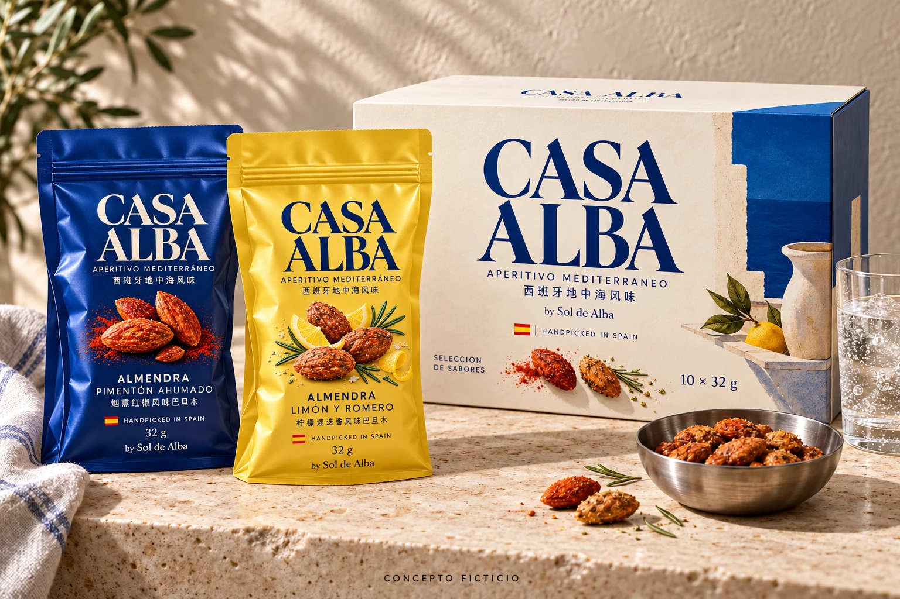
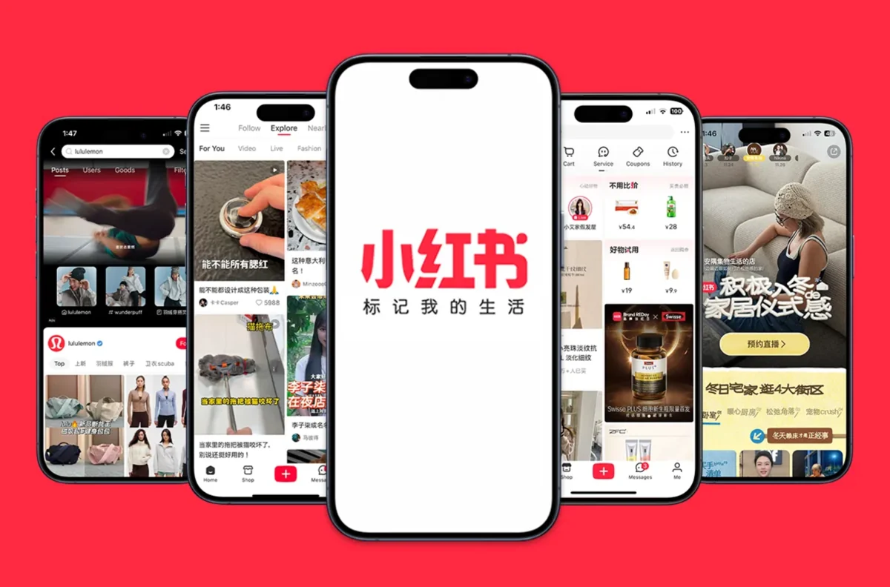
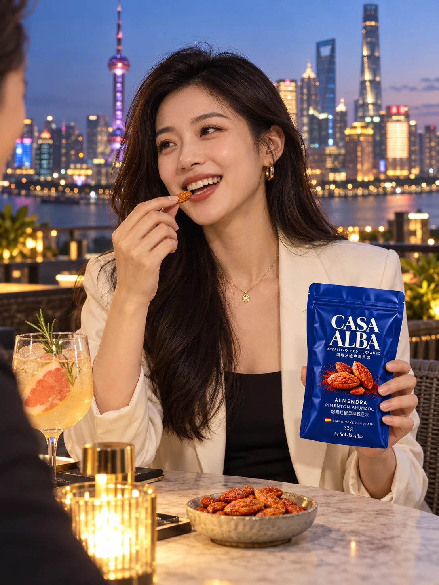
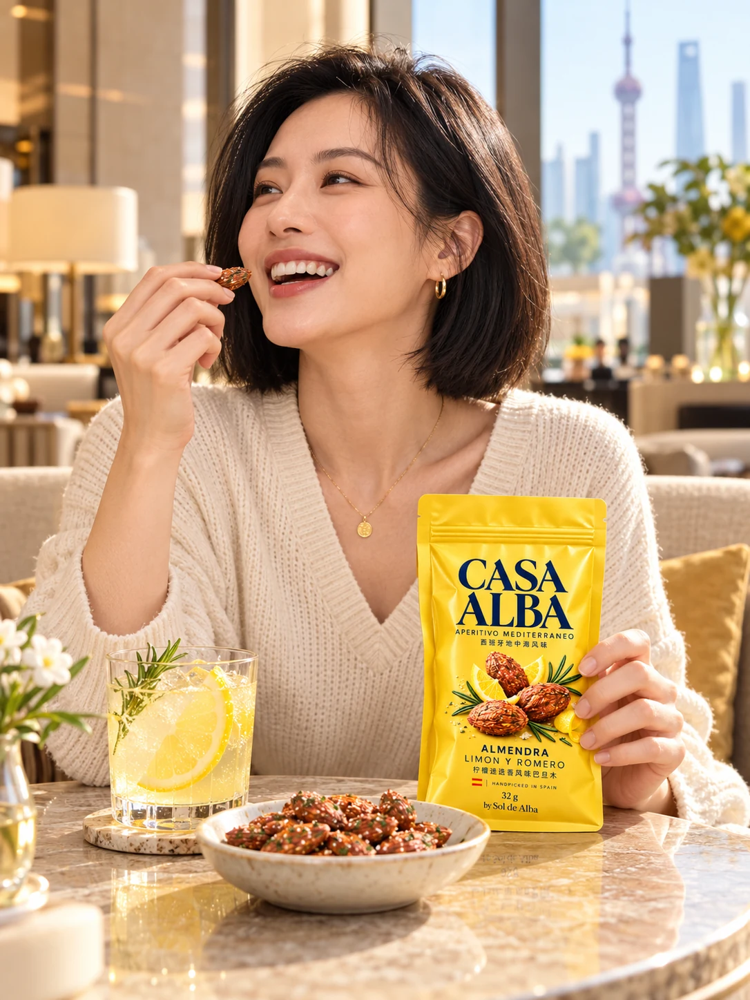

UNA PROPUESTA DE GENADIO COLINASCONCEPTO INDEPENDIENTEDESLIZA PARA CAMBIAR DE ESCENARIO ↓
01 / LA IDEAPRODUCTO + MARCA + CANAL
El aperitivo también puede viajar.
Desarrollar una línea premium con un origen reconocible y una ocasión de consumo que invite a descubrirla.
La elaboración en Granada, los sabores mediterráneos y el ritual de compartir dan forma al producto. Supermercados de importación, tiendas gourmet y venta online construyen la distribución. La coctelería, los hoteles y las creadoras activan el descubrimiento.
2SABORES PROPUESTOS
4CIUDADES OBJETIVO
90DÍAS DE PILOTO
Caso independiente para la candidatura de Product Marketing Manager en Tostaderos Sol de Alba. Marcas, envases y recetas propuestos; sujetos a validación.
02 / EL PRODUCTOUN PEQUEÑO BOCADO. UNA OCASIÓN PROPIA.
RECETAS PARA DESARROLLAR CON I+D
Sabor a Mediterráneo.
Almendra con pimentón ahumado
Una propuesta de tueste, humo y un final especiado. Pensada para explorar maridajes con bebidas secas y cítricas.
32 g FORMATO INDIVIDUAL10 × 32 g CAJA DEGUSTACIÓN
Gramajes y recetas conceptuales. La textura, el equilibrio de sal, los alérgenos y el coste por servicio se validarían antes del lanzamiento.
AHUMADOCASA ALBA / RUTA DE MARCA PROPUESTA
03 / DOS RUTAS DE MARCAUNA MISMA HIPÓTESIS DE PRODUCTO
Dos formas de contar el origen.
Extender la gama actual o construir una identidad premium propia. La elección se contrasta con consumidores y compradores.

MAQUETA CONCEPTUAL · NOMBRE PROVISIONAL
MARCA NUEVA RESPALDADA POR SOL DE ALBA
Casa Alba
Una casa de aperitivos mediterráneos con identidad propia. El producto conecta supermercados de importación, tiendas gourmet, regalo y compra para casa.
OPORTUNIDAD
Construir un universo gastronómico propio, con espacio para varias categorías.
DECISIÓN A VALIDAR
La preferencia y el precio aceptado deben justificar el esfuerzo de crear una marca.
PRUEBA PROPUESTA: ENVASE + PREFERENCIA + DISPOSICIÓN A PAGAR
GRANADA / EL PUNTO DE PARTIDA
EL MISMO RITUAL
La luz cambia.
光影流转。
UN NUEVO ESCENARIO
El aperitivo se queda.
地中海的美味，留在此刻。
HANDPICKED IN SPAIN西班牙手工甄选
De una mesa mediterránea a la barra de un hotel en Shanghái. 从地中海餐桌，到上海酒店酒吧。
GRANADA
SHANGHÁI
ESCENA ILUSTRATIVA · COLABORACIONES PROPUESTAS
04 / EL CANALRETAIL + ONLINE + EXPERIENCIAS
Un primer piloto. Cuatro posibilidades.
Empezar en Shanghái con una experiencia de producto y contenido. Guangzhou, Pekín y Chengdu quedan como posibles extensiones, condicionadas a lo aprendido en el piloto y a la disponibilidad comercial.
La experiencia conecta con la compra: distribuidores, retail gourmet y canales online que el grupo valide. Sam’s Club sería una posible cuenta comercial a desarrollar.
CANALES COMERCIALES A EXPLORAR +
LA DISTRIBUCIÓN ES EL OBJETIVO COMERCIAL
Descubrirlo una noche. Encontrarlo cada día.
Veinte puntos de venta como hipótesis de red inicial, repartidos entre distintas enseñas y tiendas gourmet. El alta de cada cuenta, el surtido y la reposición se negocian por separado.
01 / GOURMET E IMPORTACIÓN
Olé 精品超市
Objetivo para contrastar el encaje del origen español y el aperitivo premium en el lineal. Empezar con un piloto de pocas tiendas y degustación en el punto de venta.
Cuenta objetivo para una fase de expansión. Desarrollar un multipack con valor por ración y una propuesta propia para el comprador. Su selección de proveedores exige evaluación; el alta no se da por conseguida.
FORMATO PROPUESTO
Multipack específico por validar.
VALIDACIÓN
Precio, capacidad de suministro y condiciones comerciales.
Objetivo para explorar un lanzamiento que combine exposición en tienda y pedidos digitales. Adaptar el contenido del producto y las promociones a la enseña, con datos de reposición compartidos.
Retail físico + venta online. Negociación, PLV, degustaciones y reposición.
PROBAR Y COMPARTIR
Barras, hoteles y creadoras. Experiencia, contenido y derivación a puntos de venta.
MEDIR Y ESCALAR
Un importador-distribuidor, seguimiento por tienda y QR por ciudad. Contar cada venta una sola vez.
Cuentas objetivo, sin contactos ni acuerdos confirmados. Los 20 puntos de venta del simulador no se atribuyen a una cadena concreta. Walmart, otras enseñas de China Resources Vanguard, RT-Mart y Yonghui forman un mapa de expansión a estudiar tras validar precio y rotación; se confirmarían compradores y tiendas operativas. Los hoteles del selector son posibles espacios de activación y un canal adicional.
Colaboradores potenciales. No se ha contactado ni acordado la participación de las personas o establecimientos citados.
06 / DE LA EXPERIENCIA A LA COMPRA小红书 · XIAOHONGSHU
Un sabor demasiado bueno como para disfrutarlo solo de vez en cuando.
在酒吧遇见，把地中海带回家。
Del contenido de las creadoras a una caja de diez aperitivos. Una experiencia pensada para descubrir, guardar y comprar.
Propuesta de contenido con modelos ficticias generadas. Las publicaciones y cuentas de esta demo son conceptuales; no representan colaboraciones realizadas. Sin tienda ni cobros activos.

REFERENCIA DE PLATAFORMA · CAPTURA APORTADA La campaña Casa Alba se presenta en la demo interactiva.
9:41◒ ▰
小红书概念演示 · DEMO
关注发现附近⌕

上海夜色，配一口西班牙小夏的味觉日记 · 虚拟创作者西班牙烟熏红椒风味

把地中海的阳光装进口袋阿琳的周末 · 虚拟创作者柠檬与迷迭香的小惊喜
#西班牙零食 #地中海风味 #上海生活
品牌内容提案 · 人物与账号均为虚构
首页购物＋消息我
CASA ALBA · 西班牙地中海风味
把地中海 带回家。
双口味礼盒 · 10袋 × 32克 烟熏红椒5袋 + 柠檬迷迭香5袋
¥198概念定价 · 约¥19.8 / 袋
↗
从发现到购买
下一站， 你的餐桌。
计划由中国授权经销商的店铺提供下单、配送及售后服务。
概念演示 · 暂未开售 本页面不接受订单或付款。 Demo conceptual, sin pedidos ni pagos.
INTERFAZ DE CAMPAÑA RECREADA EN CHINO FOTOGRAFÍAS GENERADAS · SIN PUBLICACIONES REALES DE CASA ALBA
PROYECCIÓN DE MÉTRICAS Y CASO REAL DE REFERENCIA +
PROYECCIÓN FICTICIA · ESCALA A 4 CIUDADES · 30 DÍAS
Una noche. Muchas conversaciones.
Veinte microcreadores por noche y ciudad, más las recomendaciones de quienes lo prueban. Un objetivo de visibilidad e interés para contrastar tras cada evento.
SHANGHÁI 20GUANGZHOU 20PEKÍN 20CHENGDU 20
80MICROCREADORES / KOC
20 por evento × 4 ciudades. Una publicación por perfil.
≈420kVISUALIZACIONES PÚBLICAS
400.000 de creadoras + 20.000 de asistentes.
180PUBLICACIONES PÚBLICAS
80 de creadoras + 100 de clientes. Contenido que puede seguir descubriéndose.
≈5kINTERACCIONES PÚBLICAS
Me gusta, comentarios, guardados y compartidos · hipótesis del 1,2%.
LOS CLIENTES TAMBIÉN CUENTAN LA HISTORIA
Suponemos 100 asistentes adicionales por evento: 400 en total, sin contar a las creadoras. Si el 25% publica, se generarían 100 piezas de contenido de clientes.
微信
100 recomendacionesOBJETIVO ADICIONAL EN WECHAT
Otro supuesto del 25% de los asistentes compartiendo en Moments o chats. Puede coincidir con quienes publican en abierto.
QR distinto por ciudad para registrar visitas, altas voluntarias y pedidos. Las visualizaciones privadas de WeChat se mantienen separadas del total público.
CÓMO SE HA CONSTRUIDO LA PROYECCIÓN +
Creadoras: 4 ciudades × 20 perfiles × 1 publicación × 5.000 visualizaciones = 400.000 visualizaciones. El supuesto de 5.000 por perfil es inferior al promedio aritmético de unas 8.600 del caso Jax Coco; los contenidos, públicos y plazos son distintos.
Clientes: 4 eventos × 100 asistentes × 25% que publica = 100 publicaciones. A 200 visualizaciones por pieza, añaden 20.000. Son supuestos de trabajo sin datos observados.
Interacciones: 420.000 × 1,2% = 5.040, redondeadas a unas 5.000. Se define aquí como acciones públicas acumuladas; una persona puede realizar varias.
WeChat: 400 asistentes × 25% que comparte = 100 recomendaciones estimadas. Sin convertirlas en una cifra de audiencia privada. La ventana de lectura propuesta es de 30 días desde cada evento.
Qué significa impacto de marca: visualizaciones y acciones indican exposición e interés. El recuerdo espontáneo y asistido se contrastaría con una encuesta breve antes del evento y siete días después; no se ha supuesto un incremento de notoriedad ni ventas atribuibles.
Activación: el modelo presupone 80 participaciones y una publicación por perfil. El mix de invitación, producto y colaboraciones remuneradas se cotizaría contra la partida de producción y microcreadoras del presupuesto específico de la extensión.
ESCENARIO CONCEPTUAL · Proyección para una posible extensión a cuatro ciudades; el presupuesto de esa extensión se cotizaría aparte del piloto en Shanghái. Las visualizaciones son acumuladas, con posibles repeticiones y solapamiento entre audiencias. Las métricas se presentarían junto a las analíticas reales de las creadoras y los QR; no equivalen a personas únicas ni a ventas.
07 / LA PRUEBA DEL NEGOCIOPRECIO + MARGEN + RECOMPRA
La métrica es volver a comprar.
Un piloto para evaluar el producto, su posicionamiento y la respuesta del consumidor. Presupuesto, indicadores de marca, interés comercial y margen por venta para decidir el siguiente paso.
PRESUPUESTO ORIENTATIVO · PILOTO EN SHANGHÁI
ACTIVACIÓN Y PREPARACIÓN25.000 €
Concepto, adaptación de producto, evento, creadoras y amplificación. Partidas por cotizar.
VALIDACIÓN INICIAL90 días
Contrastar producto, precio y respuesta. Aprobar, ajustar o detener la extensión.
UMBRAL COMERCIAL EQUIVALENTE50–84 mil
Bolsas con 0,30–0,50 € de contribución para cubrir 25.000 €. Sin plazo de ventas confirmado.
25.000 € ÷ 0,50 € = 50.000 bolsas; a 0,30 €, 83.334 bolsas. Es un umbral por margen, no una previsión de ventas ni una atribución de todas las ventas a la publicidad. El plazo se estima después de validar distribución y rotación.
MARCA
¿Se recuerda?
Visualizaciones cualificadas, guardados, conversación y aprendizaje del consumidor.
DEMANDA
¿Despierta interés?
Visitas por QR, consultas sobre el producto y solicitudes de distribuidores.
NEGOCIO
¿Se vuelve a comprar?
Conversión, contribución por pedido y repetición en los canales habilitados.
ANEXO OPCIONAL · PRECIO, CANALES Y ESCENARIOS DE RECUPERACIÓN +
Ejercicio ampliado para mostrar el método de cálculo. Los plazos dependen de supuestos de distribución, margen y rotación; se recalibrarían con pedidos y datos reales del piloto. No constituyen una previsión contrastada.
PVP ONLINE · PACK REGALO¥198
Caja de 10 × 32 g · ¥19,80 por bolsa. Aproximadamente 26,52 € por caja.
INGRESO FÁBRICA · RETAIL1,10 €
Neto por bolsa, antes del apoyo promocional. Online y hostelería: 1,20 €.
CONTRIBUCIÓN · RETAIL0,30 €
Tras 0,70 € de producto y 0,10 € de apoyo comercial. Online y hostelería: 0,50 €.
REFERENCIA DE MERCADO
HBAF: una referencia pública de promociones de Tmall recoge 28,5–32,3 yuanes por 5 × 35 g. Normalizado a 320 g son unos 52–59 yuanes. Casa Alba a 198 yuanes se posicionaría aproximadamente 3,4–3,8 veces por encima: una hipótesis de regalo gourmet y origen que exige validar disposición a pagar.
Promociones históricas recogidas por un comparador, con condiciones; no tarifa vigente confirmada ni producto equivalente. No se ha confirmado demanda para Casa Alba.
AJUSTA LA RED Y SU ROTACIÓN · SUPUESTOS
0 tiendas50 tiendas
0 packs5 packs
0 cajas5.000 cajas
0 € adicionales20.000 €
HOSTELERÍA Y ENTRADA COMERCIAL +
0 espacios20 espacios
0 bolsas50 bolsas
0 €15.000 €
Volumen anualizado a 360 días cuando la red alcanza su objetivo. Inicio: 3 meses sin ventas comerciales, 3 meses al 50% del ritmo objetivo y después al 100%. Base adicional: 4 barras / hoteles × 10 bolsas pagadas al día. El retail se modela con un pack equivalente de 10 bolsas; el formato de cada enseña se validaría. Los pedidos de las apps de las enseñas se asignan al retail. Las 800 cajas online corresponden al operador de marca y se cuentan aparte.
RECUPERACIÓN DEL LANZAMIENTO · DESDE EL ARRANQUE15,5 meses
CAMPAÑA / ACTIVACIÓN25.000 €
CON ENTRADA COMERCIAL30.000 €
En 12 meses se recuperan 20.500 € de los 30.000 € planteados.
Contribución tras la inversión al mes 12: −9.500 €. La contribución de los meses siguientes cubre el saldo pendiente.
Solo campaña · 25.000 €
13,6 meses
Contribución anual a ritmo estable
32.800 €
Contribución del primer año · con arranque
20.500 €
Bolsas retail / hostelería / online · año estable
72.000 / 14.400 / 8.000
Facturación fabricante · año estable
106.080 €
Tiendas para recuperar todo en 12 meses*
35 puntos de venta
*Con la misma rotación por tienda, los demás canales y el mismo calendario de arranque. Antes de estructura, financiación e impuestos. Recuperación por margen generado, con cobros y circulante pendientes de modelar.
Si el coste variable sube 0,10 €/bolsa, la recuperación del lanzamiento pasa a unos 19,9 meses.
EL RELOJ INCLUYE LA ENTRADA AL MERCADO
MESES 1–3Preparar
Producto, importador y compradores. Ventas comerciales computadas: 0.
MESES 4–6Activar
Piloto y primeras reposiciones. Hipótesis: 50% del ritmo objetivo en cada canal.
DESDE EL MES 7Consolidar
100% del ritmo objetivo. El margen acumulado amortiza el presupuesto.
Este calendario es una hipótesis común a los canales, no un plazo de homologación de Sam’s Club ni de otra enseña. Un retraso comercial desplaza la recuperación.
TRES ESCENARIOS · PRESUPUESTO BASE DE 30.000 €
La rotación cambia el plazo.
Escenario retail
Puntos de venta
Packs / tienda / día
Campaña · 25.000 €
Total · 30.000 €
Prudente
10
0,5
22,6 meses
26,2 meses
Base
20
1
13,6 meses
15,5 meses
Expansión
30
1,5
9,5 meses
10,5 meses
Comparación fija, independiente de los deslizadores: mismo margen retail de 0,30 €/bolsa, 4 barras / hoteles × 10 bolsas diarias, 800 cajas online al año y el mismo arranque. Son objetivos comerciales sin pedidos ni demanda contrastada. Los 30.000 € cubren la campaña y una provisión de entrada comercial; no representan la financiación total del negocio.
DE DÓNDE SALE CADA EURO +
01 / COSTE OBJETIVO POR BOLSA
Almendra española · 32 g a ~14 €/kg
0,45 €
Tueste y condimentos
0,07 €
Doypack y envasado
0,14 €
Control y merma
0,04 €
Coste variable estimado
0,70 €
Referencia pública de almendra Marcona española: 13–15 €/kg. Sirve como control de plausibilidad; variedad y compras industriales se negociarían. Elaboración, doypack y merma son supuestos por cotizar.
02 / DESTINO DE LOS ¥198 ONLINE
10 bolsas al fabricante · 12 €
¥89,59
Estuche local
¥6,00
Transporte + provisión importación
¥20,00
IVA repercutido · hipótesis 13%
¥22,78
Plataforma, afiliación y cobro · 10%
¥19,80
Preparación y última milla
¥10,00
Reserva devoluciones / merma
¥4,00
Contribución del operador chino
¥25,83
Modelo de importación general y operador sujeto al régimen general de IVA. Los costes se expresan netos del IVA recuperable; el IVA de importación recuperable sería una necesidad de caja, no otro coste. La clasificación, aranceles, deducciones y condiciones reales se confirmarían con el importador. Los ¥20 son una provisión, no una tarifa aduanera.
03 / PRESUPUESTO DE CAMPAÑA
Adaptación, I+D y artes del envase
4.000 €
Evento piloto, degustación y formación
6.000 €
Producción y microcreadoras
4.000 €
Amplificación y medios
4.000 €
Muestras y contingencia
2.000 €
Invitado y derechos · ajustable
5.000 €
Campaña / activación
25.000 €
Partidas de planificación, sin ofertas recibidas. Los 5.000 € iniciales contemplan un guest o equipo local; una figura internacional requeriría cotizar honorarios, viajes y derechos, y ajustar el simulador. No se presupone la participación de los candidatos citados.
Se añade una provisión separada de 5.000 € para entrada comercial y PLV inicial: lanzamiento modelado de 30.000 €. Es una reserva de planificación, no una tarifa de alta confirmada de ninguna cadena. El apoyo promocional recurrente del retail se descuenta además a razón de 0,10 €/bolsa.
04 / EL PRECIO TAMBIÉN TIENE UN LÍMITE
PVP por 10 bolsas
Contribución local*
¥168 · descuento fuerte
¥2,28
¥198 · objetivo
¥25,83
¥218 · opción regalo
¥41,53
*Del operador chino, después de los costes variables modelados, antes de su estructura y de publicidad adicional. La comisión del 10% es una hipótesis agregada, no una tarifa de Xiaohongshu. Bajar el PVP a ¥168 deja muy poco margen local aunque se mantenga el ingreso de Sol de Alba.
Canal hotel: explorar 14 yuanes por bolsa como precio al hotel, sin IVA, para minibar o venta en bar. Con 8,96 yuanes al fabricante y una provisión logística de 2 yuanes por bolsa, quedarían unos 3 yuanes para el distribuidor. Rotación y condiciones se validarían; las muestras gratuitas no cuentan como ventas.
05 / MARGEN Y VOLUMEN POR CANAL · RITMO ESTABLE
Canal
Bolsas / año
Contribución / bolsa
Contribución / año
Retail físico
72.000
0,30 €
21.600 €
Hostelería
14.400
0,50 €
7.200 €
Online
8.000
0,50 €
4.000 €
Total
94.400
Mix de canales
32.800 €
Retail: 1,10 € de ingreso neto de fábrica − 0,70 € de coste − 0,10 € de provisión comercial = 0,30 €/bolsa. Hostelería y online: 1,20 € − 0,70 € = 0,50 €. El importador asume logística y venta local; los márgenes de la cadena y del distribuidor se negocian aparte. El PVP online de ¥198 no es una tarifa propuesta ni validada para Sam’s Club u otra enseña.
20 tiendas × 1 pack × 10 bolsas × 360 días × 0,30 € + (4 espacios × 10 bolsas × 360 días + 800 cajas × 10) × 0,50 € = 32.800 € de contribución anual a ritmo estable.
El primer año equivale a 7,5 meses al ritmo objetivo: 3 meses al 0%, 3 al 50% y 6 al 100%. Sell-out y reposición al fabricante se suponen acompasados; el llenado inicial del canal y las muestras gratuitas no se cuentan como ventas adicionales. La recuperación se apoya en contribución comercial acumulada; atribuir ventas a la publicidad exigiría medición incremental. Cambio de referencia: 1 € = 7,466 CNY (BCE, 23/10/2026). Estructura, impuesto sobre beneficios, financiación, circulante y publicidad adicional quedan fuera. No hay acuerdos ni pedidos confirmados.
01—30
Probar
Muestras, cotizaciones y validación con importadores y compradores en Shanghái.
31—60
Repetir
Contrastar producto, pack y precio con consumidores y compradores.
61—90
Decidir
Negociar el piloto en tienda y la activación, con margen y suministro viables.
08 / LA PERSONA DETRÁSGRANADA ↔ ASIA
F&B · MARCA · DESARROLLO COMERCIAL
Genadio Colinas.
Más de 13 años en marketing internacional. Alimentación, campañas con influencers y desarrollo comercial entre España y Asia.
EL WILLY GROUP
6 locales
RIOJA + CRUSH
5 ediciones
PROJECT Z · INFLUENCERS
2.000+ colaboraciones
PROJECT Z · USUARIOS DIARIOS
10.000 → 200.000
ESTRATEGIA Y EJECUCIÓN CREATIVA
Dirección de arte · Dirección de fotografía · Campañas 360° · Influencer marketing · Contenido de marca · IA aplicada al marketing.
Dirección de marketing de 6 restaurantes y gestión de 1 millón de RMB de presupuesto anual. Campañas online y offline, contenidos y colaboraciones con Nike, Apple y NBA.
RIOJA WINE FESTIVAL · SHANGHÁI
Coordinador durante 3 ediciones B2B, reuniendo a distribuidores de vino y profesionales del sector.
CRUSH NATURAL WINE FEST · SHANGHÁI
Coordinación durante 2 ediciones del festival de vino natural.
AOVE · SHINSEGAE · SEÚL
Proyecto de introducción comercial de aceite de oliva virgen extra español para Shinsegae, con desarrollo del posicionamiento y gestiones de acceso al canal de alimentación premium.
FOOD & BEVERAGE · SOMMELIERÍA
Food & Beverage Management, Università Bocconi (2018). EVOO Sommelier y análisis sensorial de AOVE, niveles 2A y 2B, Escuela Europea de Cata, Madrid.
360° Advanced Olive Oil Sommelier Certificate Programme, Grecia. Matrícula confirmada para noviembre de 2026.
PROJECT Z · CAMPAÑAS CON INFLUENCERS
Gestión de 2.000+ colaboraciones, 1 millón de USD de presupuesto y un equipo de 5 personas. Contribución al crecimiento de 10.000 a 200.000 usuarios activos diarios.
La idea, el concepto creativo y la propuesta estratégica que aquí se presentan son originales de Genadio Colinas. Este trabajo se ha preparado y presentado como supuesto profesional e independiente para su candidatura a la vacante de Product Manager de Grupo Barragán Espinar / Tostaderos Sol de Alba, en octubre de 2026.
Las marcas, capturas, referencias y demás materiales de terceros pertenecen a sus respectivos titulares. Las maquetas y escenas generadas ilustran un supuesto y no representan productos lanzados, acuerdos comerciales ni resultados obtenidos.
CONTEXTO, ALCANCE Y FUENTES +
Propuesta independiente de Genadio Colinas para su candidatura a Product Marketing Manager. No es una web oficial de Tostaderos Sol de Alba. Casa Alba es un nombre de trabajo y Crunchers Aperitivo una extensión propuesta. Recetas, envases, condiciones de venta y cifras son hipótesis. Las imágenes de producto y de las creadoras son maquetas y escenas generadas. La captura de Xiaohongshu aportada por el candidato sirve de referencia visual; no contiene una campaña publicada de Casa Alba. El claim propuesto «Handpicked in Spain» requiere acreditar selección manual y origen español antes de utilizarse comercialmente. No hay acuerdos con cadenas de retail, distribuidores, hoteles, bartenders ni plataformas, y no se realizan ventas.
La actividad online se desarrollaría tras confirmar la admisión del vendedor y de los productos. La importación minorista transfronteriza para uso personal no se utilizaría como abastecimiento comercial de tiendas ni hoteles.
Referencias de precio y costes consultadas el 26 de octubre de 2026; pueden variar. Las promociones del comparador no se han confirmado como vigentes. Los enlaces a cada hotel están disponibles en el selector de ciudades.